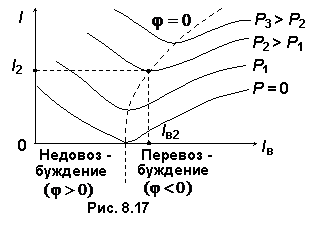

8.5.7. U-образные характеристики двигателя
Зависимости тока якоря двигателя от тока возбуждения, т.е. I = f(Iв)
при постоянной нагрузке (М = const или P2 = const) на валу двигателя называют U-образными характеристиками синхронного двигателя. На рис. 8.17 приведено семейство характеристик I = f(Iв) для различных значений мощности на валу СД. Пунктирная линия соответствует значению коэффициента мощности cosφ = 1.

При работе машины в режиме недовозбуждения (левая область характеристик) синхронный двигатель потребляет реактивную мощность из сети и является для неё активно-индуктивной нагрузкой (угол φ > 0). При работе машины в режиме перевозбуждения (правая область) синхронный двигатель генерирует реактивную мощность в сеть и является для неё активно-ёмкостной нагрузкой (угол φ < 0, см. рис. 8.17).
Обратите внимание, что при больших
токах возбуждения происходит насыщение магнитной цепи машины, в результате чего нарушается линейная зависимость магнитного потока и ЭДС от тока возбуждения. Поэтому правые ветви U-образных характеристик становятся более пологими.
Синхронные двигатели мощностью свыше 100 кВт оказываются экономически выгоднее асинхронных, в основном благодаря способности работать с опережающим коэффициентом мощности cosφ.